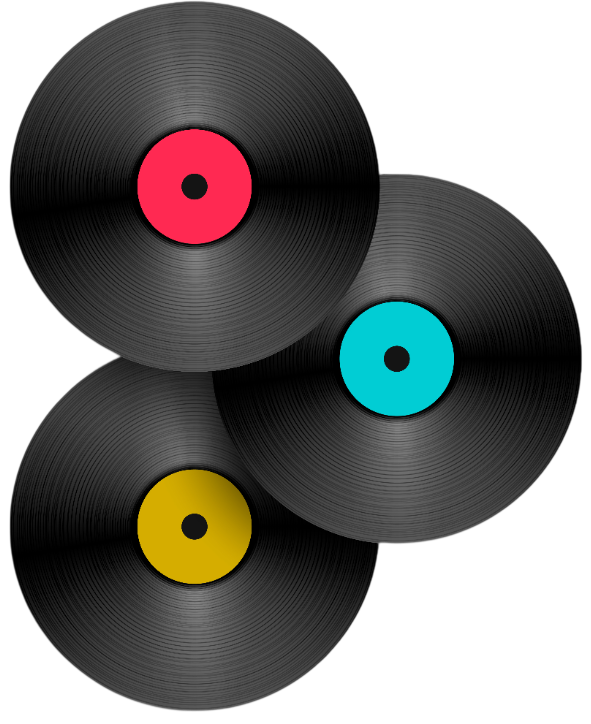
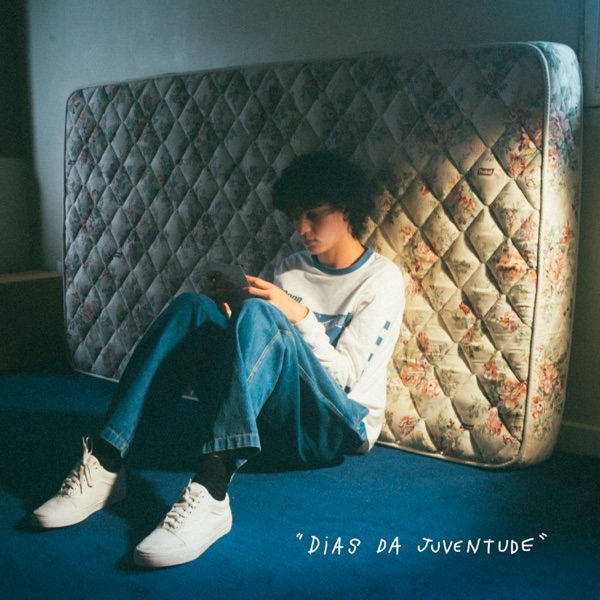
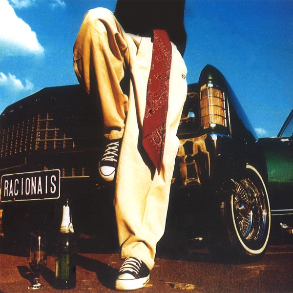

entresulcos
desde os Primórdios da Humanidade, a Música esteve Presente
desde os Primórdios da Humanidade, a Música esteve Presente

entresulcos nasce da ideia de que a música sempre foi parte essencial da experiência humana — desde os primeiros sons que marcaram o início da vida até as melodias que hoje carregam nossas memórias mais íntimas. Mais do que um catálogo, somos um espaço onde o tempo se traduz em som, reunindo estilos, épocas e emoções em uma curadoria que valoriza a conexão entre passado e presente. Cada faixa, cada vinil e cada detalhe aqui existe para resgatar sensações, preservar histórias e transformar lembranças em experiências vivas.



